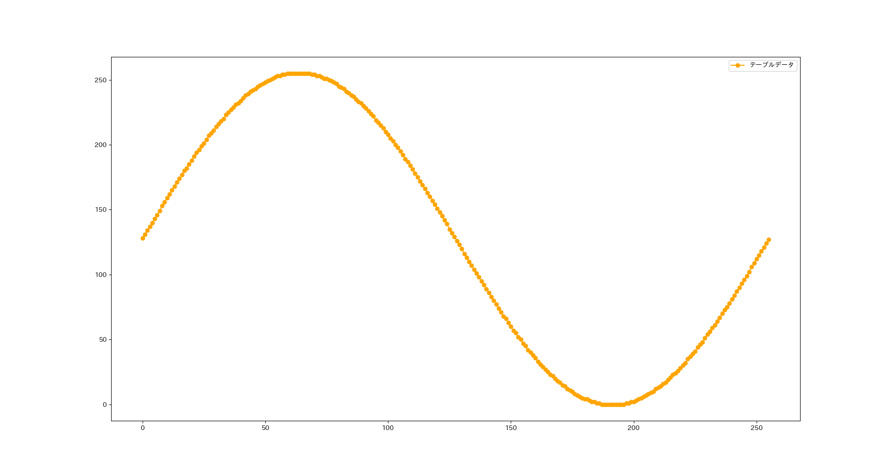
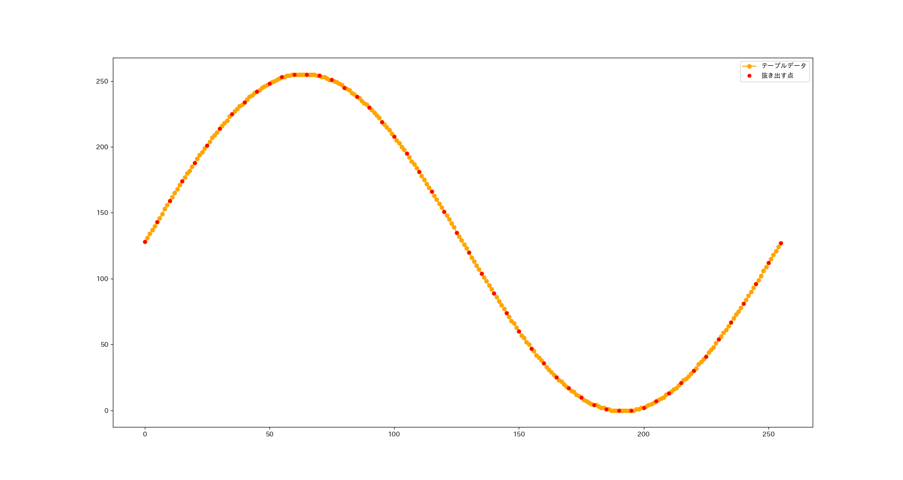
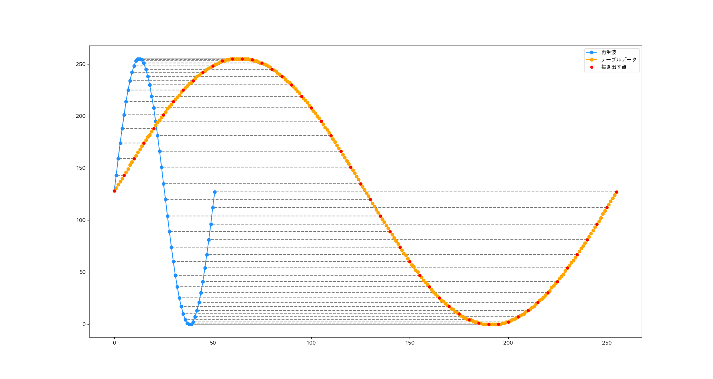
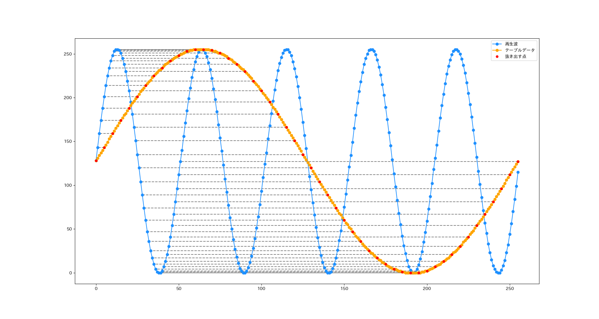
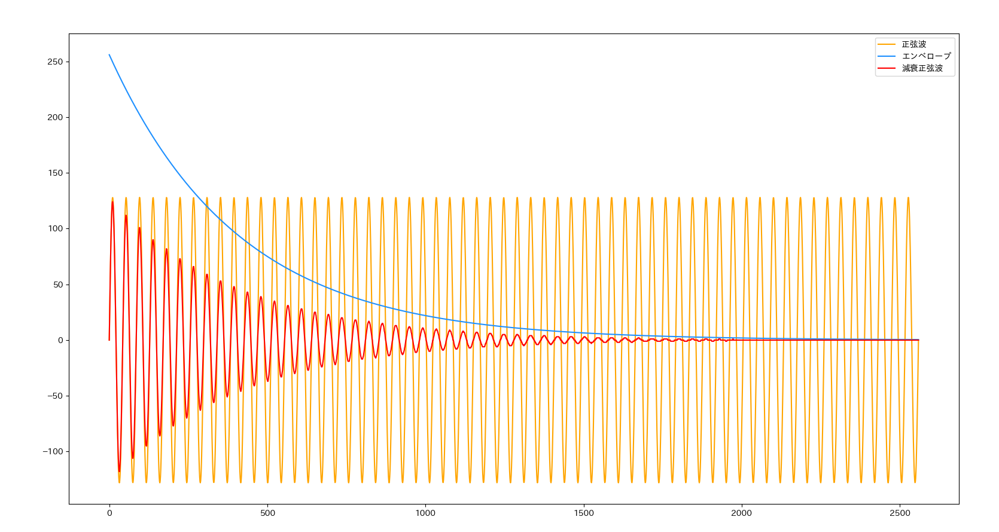

8bit PICマイコンである、PIC18F27Q43 で電子オルゴールを作りました。波形テーブルを使って減衰正弦波を生成し、機械式オルゴールのような音を出すことができます。
波形生成アルゴリズム
単純に減衰正弦波を作り出そうとすると、サイン関数とエンベロープを計算する必要があります。これはPIC18Fにとって非常に重い計算になるので、サンプリング周期に間に合いません。そこで1周期分のサイン波のデータをROMに保持しておき、間引きながら読み出すことで任意の周波数の正弦波を生成します。今回のテーブル長は256点で8bit分ですが、間引き間隔は16bitで管理し、正弦波生成時に上位8bit分のみを使うことで高い分解能で任意の周波数を作り出しています。

1. テーブルデータ

2. 間引きして抜き出すデータ

3. 抜き出したデータから生成された再生波

4. 繰り返し抜き出して生成された再生波
減衰波形は、エンベロープの重みをテーブルに持ち、それをサイン波と掛け合わせることで実現します。PIC18Fシリーズには乗算器があるため8bit×8bitの整数の乗算を高速に行うことができます。乗算結果は上位8bitだけを使います。
これらの処理を行うオシレータを4チャンネル分用意し、それらの出力を足し合わせることで4和音を生成します。この音声データを200kHzでPWM変調をかけたものをアナログ出力としています。
ソースコードはこちら。